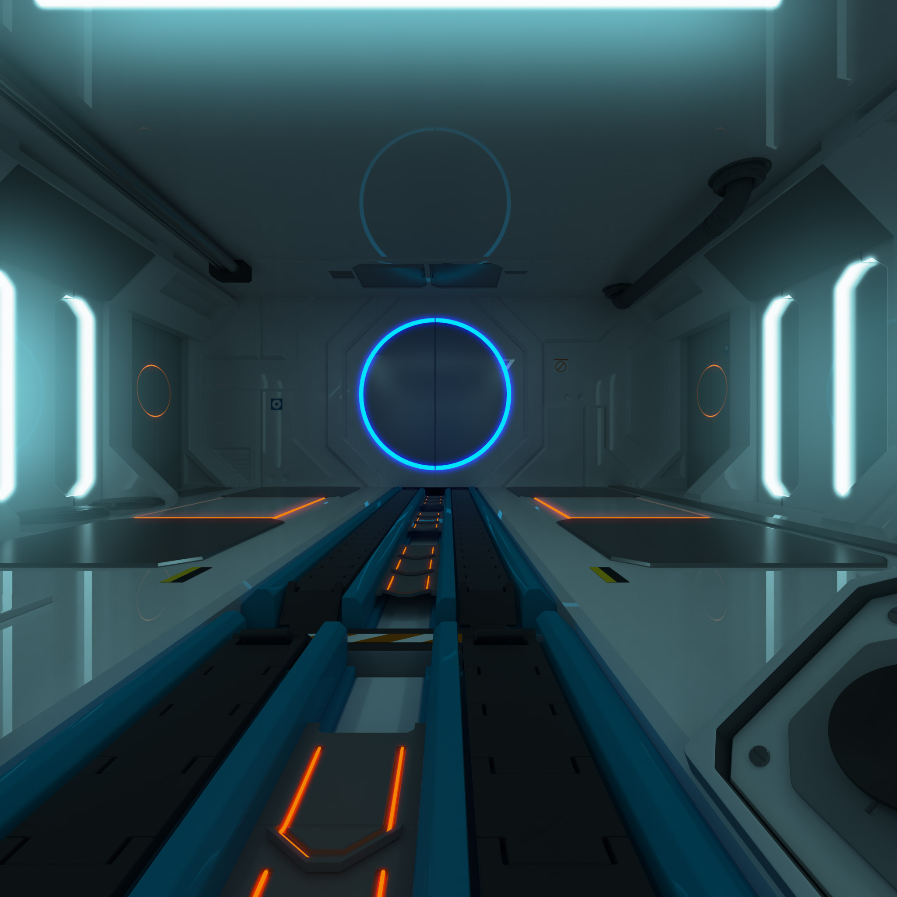

<link rel="import" href="../../bower_components/polymer/polymer.html">
<link rel="import" href="../../bower_components/cube/static/webcomponents/vz-cube.html">

<dom-module id="el-panorama">
    <template>
        <style media="screen">
            :host {
                position: absolute;
                top: 0; right: 0; bottom: 0; left: 0;
                display: flex;
                justify-content: center;
                align-items: center;
                overflow: hidden;
            }
            :host > * {
                flex: 0 0 auto;
            }
            .overlay {
                pointer-events: none;
                position: absolute;
                top: 0; right: 0; bottom: 0; left: 0;
                /* center content */
                display: flex;
                flex-direction: column;
                justify-content: center;
                opacity: 1;
                transition: opacity 1000ms ease-in-out;
                will-change: opacity;
            }
            .overlay.hidden {
                opacity: 0;
                transition-duration: 300ms;
            }

        </style>

        <!--  -->

        <vz-cube>
            <vz-cubepivot>
                <vz-cubeface data-face="top" style$="{{getFaceStyle(name, 'top')}}"></vz-cubeface>
                <vz-cubeface data-face="bottom" style$="{{getFaceStyle(name, 'bottom')}}"></vz-cubeface>
                <vz-cubeface data-face="front" style$="{{getFaceStyle(name, 'front')}}"></vz-cubeface>
                <vz-cubeface data-face="back" style$="{{getFaceStyle(name, 'back')}}"></vz-cubeface>
                <vz-cubeface data-face="left" style$="{{getFaceStyle(name, 'left')}}"></vz-cubeface>
                <vz-cubeface data-face="right" style$="{{getFaceStyle(name, 'right')}}"></vz-cubeface>
            </vz-cubepivot>
        </vz-cube>

        <div id="overlay" class="overlay">
            <div class="overlay__content">
                <content select="[role=overlay]"></content>
            </div>
        </div>
    </template>
    <script>
    Polymer({
        is: 'el-panorama',
        properties: {
            name: { type: String },
            autoload: { type: Boolean, value: true },
            autorotate: { type: Boolean, value: true },
            overlayReappearTimer: { type: Number, value: 1000 }, // ms
        },
        getFaceStyle: function (name, side) {
            return "background-image: url(assets/images/panoramas/" + name + "/" + side + ".jpg)"
        },
        ready: function () {
            // import prototype functions to object
            this._mouseDownHandler = this._mouseDownHandler.bind(this)
            this._mouseUpHandler = this._mouseUpHandler.bind(this)
            this._touchStartHandler = this._touchStartHandler.bind(this)
            this._touchEndHandler = this._touchEndHandler.bind(this)
        },
        attached: function () {
            // mouse events
            this.addEventListener('mousedown', this._mouseDownHandler)
            // touch events
            this.addEventListener('touchstart', this._touchStartHandler, { passive: true })
            this.addEventListener('touchend', this._touchEndHandler, { passive: true })
            this.addEventListener('touchcancel', this._touchEndHandler, { passive: true })
        },
        delayedShowOverlay: function () {
            if (this.overlayHiddenTimeout) clearTimeout(this.overlayHiddenTimeout)

            this.overlayHiddenTimeout = setTimeout(this.showOverlay.bind(this), this.overlayReappearTimer)
        },
        showOverlay: function () {
            if (this.$.overlay && this.$.overlay.classList) this.$.overlay.classList.remove('hidden')
        },
        hideOverlay: function () {
            if (this.overlayHiddenTimeout) clearTimeout(this.overlayHiddenTimeout)

            if (this.$.overlay && this.$.overlay.classList) this.$.overlay.classList.add('hidden')
        },

        _mouseDownHandler: function (e) {
            window.addEventListener('mouseup', this._mouseUpHandler)
            this.hideOverlay()
        },
        _mouseUpHandler: function (e) {
            window.removeEventListener('mouseup', this._mouseUpHandler)
            this.delayedShowOverlay()
        },
        _touchStartHandler: function (e) {
            this.hideOverlay()
        },
        _touchEndHandler: function (e) {
            this.delayedShowOverlay()
        },

    })
    </script>
</dom-module>
